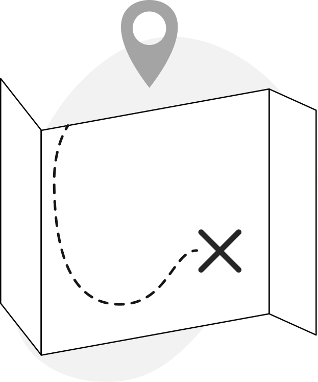

Exciting! You and your team are now about to start a 2h feedback and wrap up session, the purpose for doing this is to open up for clear conversations, strengthen the relationships and generate development for your team.
A few things you need before starting:
One friendly reminder before we start; it's important that everyone's full attention is turned to the team so take this last minute before starting to send that urgent email or slack message. Many steps require a phone so during those events pls resist the urge of checking your notifications for the next 2h.
Great, let’s do this!